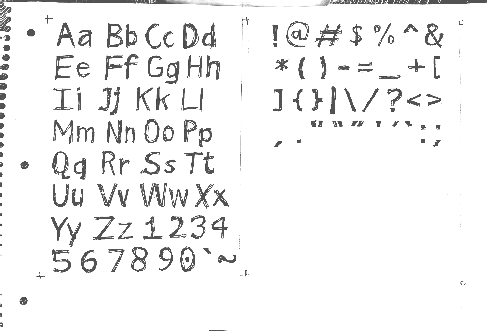

credits
fonts
for the headers, i use Epilog by tom7. for the bodies, i use my own font, bokonon! bokonon is named after the religion of Bokononism from Kurt Vonnegut's 1963 Cat's Cradle. it's roughly based on Microsoft's beautiful Tahoma. you can use it however you like, just don't sell it :)

palette
i'm using the same palette as aseprite's default one, DB32. it's just so pretty!